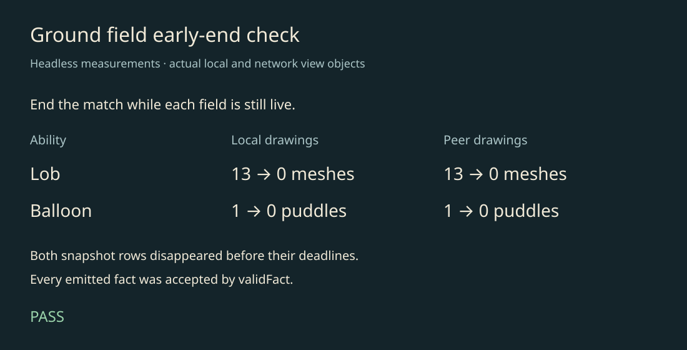

Ground fields end with the match
To review · 2026-10-22 · thr_5k5554wgkh
Headless check passed: Lob and Balloon drawings clear locally and on network peers before field expiry.

Measured results · Reproduce the headless check
Migration replay sweep
Seeds 2, 3, 6, 7 and 11 matched against 20abac6502e8 after restoring Balloon's next-tick Soak refresh and Dive's unattributed prone status (both regressed in 4f18ce18). Only the final row's tune_hash provenance is excluded; no gameplay rows are filtered. Pong, Mender and Coach were excluded.
bun run simulate --same 20abac6502e8 --seeds 2,3,6,7,11 \ --lineup fletcher,hook,mitts --lineup brew,wata,hook
Identical migration sweep and full ability coverage. Both revisions cast all roster abilities; none were uncast.
The subsequent requested body-overlap rule intentionally changes existing area abilities too: Tangle and Around the world can hit bodies whose centres lie just outside their reach. The final tree therefore differs from the old baseline at these edge hits; the final-tree sweep records those differences. The matching sweep above precedes that requested gameplay change.
Checks: 249 tests passed, one skipped; schema, lint and formatting checks passed. Ground rows travel in snapshots, not new facts; every fact in the headless check passed validFact.